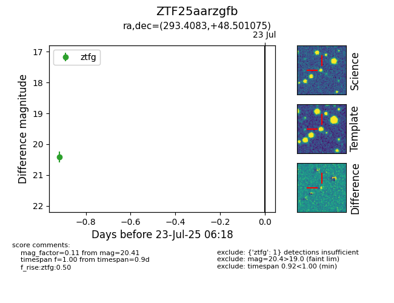

Target ZTF25aarzgfb at 2025-07-23 12:37, see:
FINK: fink-portal.org/ZTF25aarzgfb
Lasair: lasair-ztf.lsst.ac.uk/objects/ZTF25aarzgfb
ALeRCE: alerce.online/object/ZTF25aarzgfb
alt names
ZTF25aarzgfb (ztf,fink)
coordinates:
equatorial (ra, dec) = (293.4083,+48.50108)
galactic (l, b) = (80.8698,+13.50657)
photometry
last ztfg=20.41
1 ztfg detections
